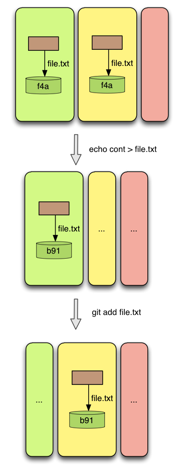
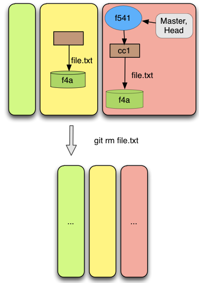

Description
The operations add and remove are used to add and remove content from index. As we have said before the index contains all the files and contents to be added on the next commit.
Git add operation does not simply refers of adding a file to the file. Instead it refers of adding a file with a certain content to the index. If we have a file in the index and we modify it on the working directory, for this modification to be visible on the next commit, the file must be added again to the index.
The remove operation removes a file from index, so it will not be present in the next commit and will stop being tracked. The removed file besides of being removed from index, will also be removed from the working directory (if it still exists there).
Pre-conditions
The add operation has only one pre-condition. The file has to be in the working directory. It means that any file that is in the working directory can be always added to index .Relatively to the remove operation there are a few conditions that have to be satisfied for the remove operation be performed, which are:
The file that is being removed is currently in index
The file that is being removed is in the current commit (the commit pointed by the branch identified by HEAD) exactly with the same content.
The first restriction is quite obvious. It is not possible to remove a file if it does not exists. The last restriction exists to avoid the accidental deletion of a file’s contents. It is possible to have a file in the index with a certain content that does not exists in the repository and since the remove operation removes the file from the index and from the working directory, the content would be lost.
Result
After performing the add operation there is something that will be always observed. The file will be in index. Besides, the add operation is also used to resolve conflicts. If a file was marked as unmerged, when performing an add operation, the file with the current content is added to index and the unmerged mark is removed. A file is marked as unmerged when it results from a conflict in a merge operation. More details about merged and un- merged files will be given later.
The result from performing the remove operation is that the file is not anymore in the index. If the file was marked as unmerged, remove resolves the conflict by deleting the file.
Examples
Figure 4, shows a simple case of adding a file to the index. It can be seen, that no changes are made in the repository nor in the working directory. The only effect is that the index will contain the new file.
Figure 4
The dots means that the content is kept.
Figure 5, contains the case of updating the content of a file. Assuming that the file is already in the index, changing its content in the working directory, will not change the content in the index. We need to explicitly add the file with the new content in the index.
 Figure 5
Now lets loot at the remove operation. Figures 6,7 show a simple case of removing a file from the index. As the reader can see the file will be removed from the index, but also from the working directory. There are no changes on the repository.
Figure 6
 Figure 7